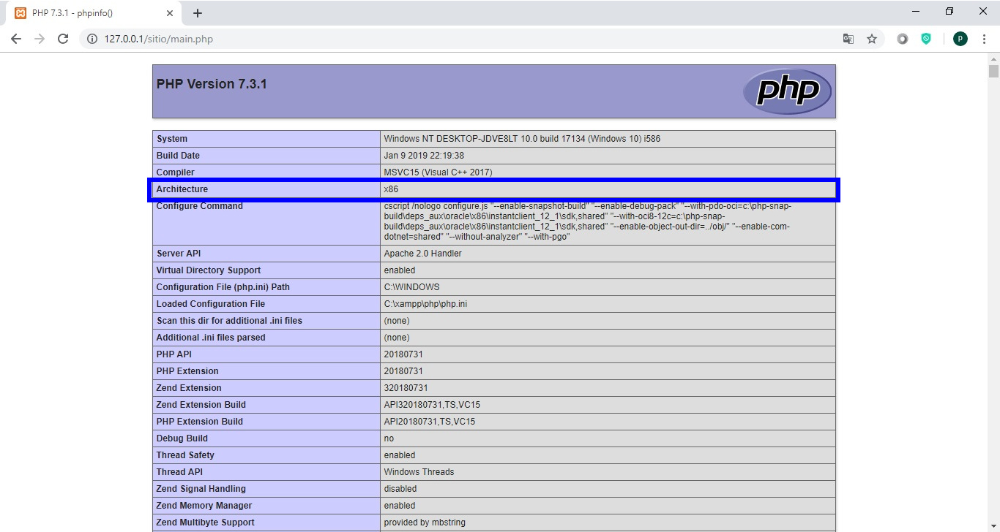
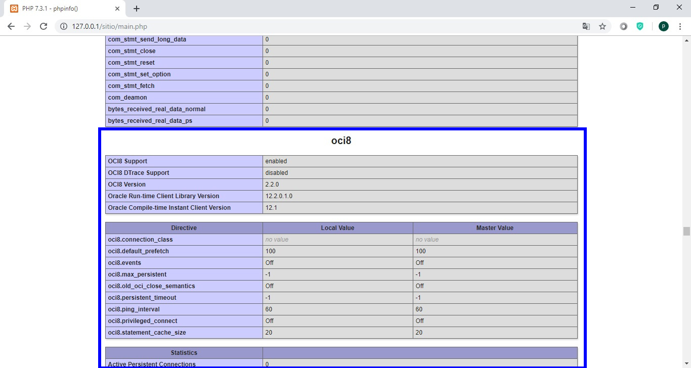
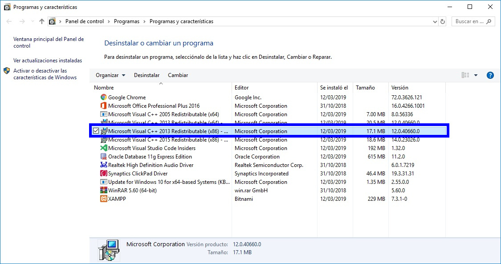
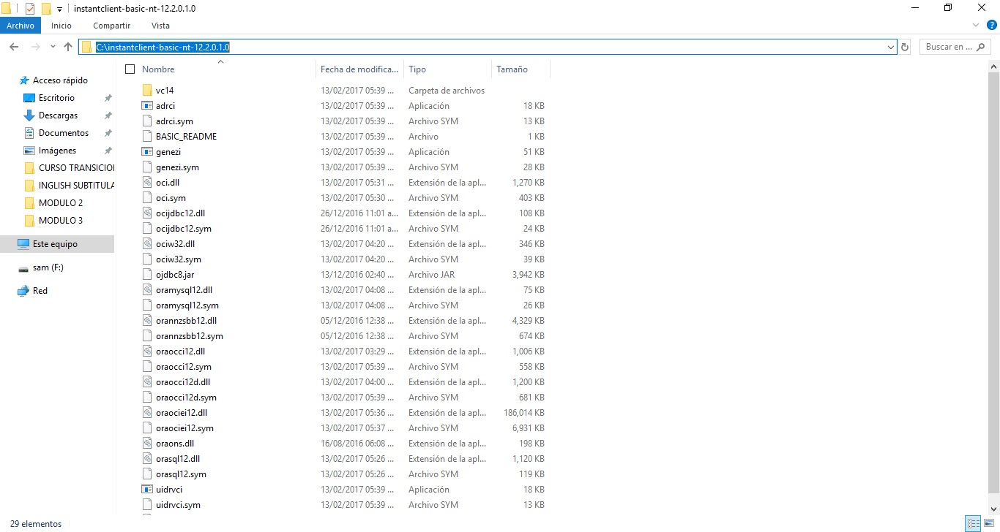
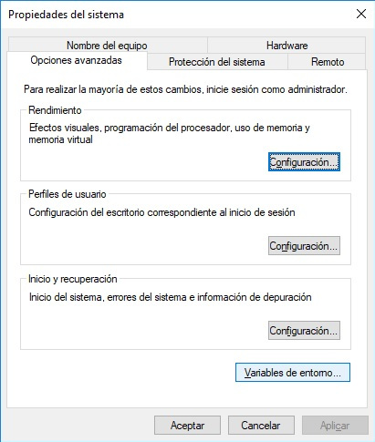
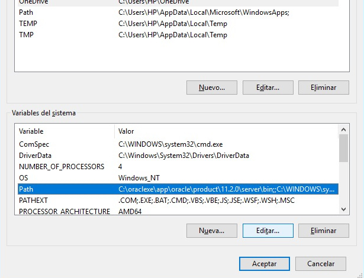
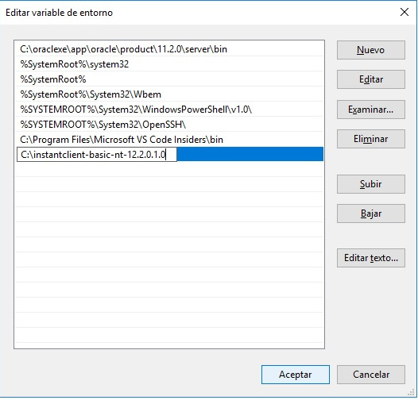
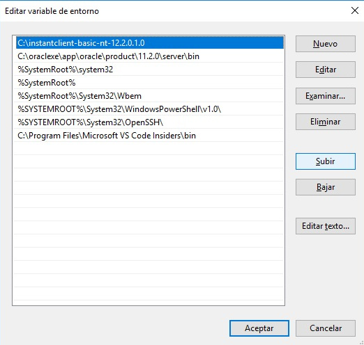

Activar oci8 en XAMPP
Antes de todo crear un archivo al cual llamaremos info.php, éste tendrá el siguiente contenido:
<?php
phpinfo();
Ejecutarlo en el navegador y verificar la arquitectura de PHP.
Si la arquitectura de PHP es x86 (32 bits) todo el software que se usará en esta guia tiene que ser a 32 bits, no importando que el sistema operativo sea a 64 bits.
Verificar si oci8 está acitvado, en caso de ser así en la informaciòn que muestra el archivo tendremos una sección que muestra la información de oci8.
Pero en caso de no estar esta sección realizar lo siguiente.
1. Instalar Microsoft Visual C++ 2013 redistributable.

2. Descargar y descomprimir
instantclient-basic-nt-12.2.0.1.0.zip en la unidad C.
3. Asignar a la variable de entorno path el directorio donde se descomprimio el instanclient, para hacerlo copiar la ruta donde se instalo el instantclient

Despues dar click derecho en equipo->propiedades->Configuracion avanzada del sistema, en la ventana que se abre dar click en el boton variables de entorno.

En la siguiente ventana, en el recuadro variables del sistema seleccionar Path y dar click en el boton editar.

En el siguiente cuadro de dialogo dar click en nuevo y pegar la ruta donde esta instalado el instantclient y dar enter.

Despues mover la linea que acabamos de crear de modo que esta quede por encima de cualquier variable de entorno de oracle.

Por ultimo dar click en aceptar en todas las ventanas que se abrieron.
4. Reiniciar la pc.
5. Abrir el archivo C:\xampp\php\php.ini buscar la linea ;extension=oci8_12c ; Use with Oracle Database 12c Instant Client y quitarle el punto y coma del inicio,
guardar los cambios e iniciar o reiniciar apache y ejecutar de nuevo el archivo creado en el paso 1.
Si se realizaron los pasos de manera correcta debemos ver la extension activada, en caso de que asi sea verificar si podemos conectarnos con oracle desde PHP, para hacerlo comentar la linea phpinfo(); del archivo info.php y escribir el siguiente codigo.
try {
$conn = oci_connect("usuario", "password", "localhost/XE");
echo "CONEXION EXITOSA!!!";
} catch(Exception $ex) {
echo "ERROR: $ex";
}
Ejecutar el archivo y en caso de no tener errores debemos ver el mensaje CONEXION EXITOSA!!! en la pagina.